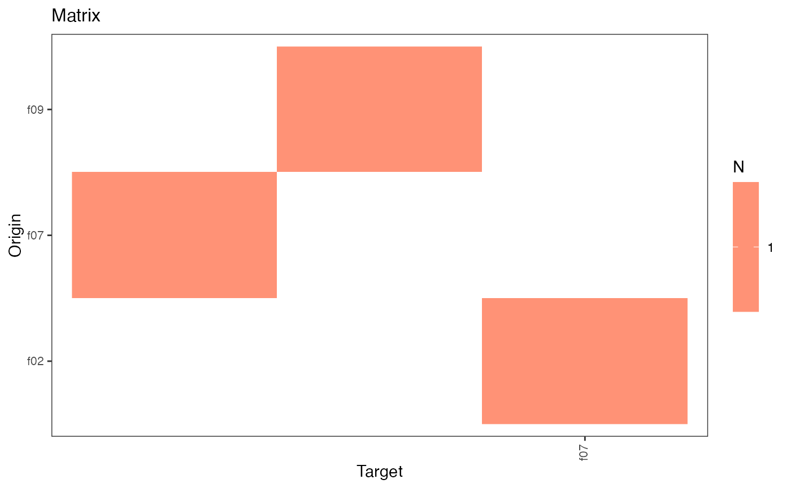

Class providing the HospiNet object with its methods
HospiNet.RdClass providing the HospiNet object with its methods
HospiNet
Format
R6Class object.
Value
Object of R6Class with methods for accessing facility networks.
Fields
edgelist(data.table) the list of edges (origin, target) and their associated number of movements (N) (read-only)
matrix(matrix) the transfer matrix (active binding, read-only)
igraph(igraph) the igraph object corresponding to the network (active binding, read-only)
n_facilitiesthe number of facilities in the network (read-only)
n_movementsthe total number of subject movements in the network (read-only)
window_thresholdthe window threshold used to compute the network (read-only)
nmoves_thresholdthe nmoves threshold used to compute the network (read-only)
noloopsTRUE if loops have been removed (read-only)
hist_degreeshistogram data of the number of connections per facility
numFacilitiesthe number of facilities in the network (read-only). Same as n_facilities, but with a different source (base instead of igraph), maybe useful as double-check
TBAmeanthe mean time between admissions (read-only)
TBAdistributionthe distribution of time between admissions (read-only)
LOSmean=the mean length of stay (read-only)
LOSdistributionthe distribution of length of stay (read-only)
LOSPerHospthe mean length of stay for each facility (read-only)
admissionsthe number of admissions in the entire data base (read-only)
admissionsPerHospthe number of admissions to each facility (read-only)
subjectsthe number of unique subjects in the data base (read-only)
subjectsPerHospthe number of unique subjects admitted to each facility (read-only)
degreesnumber of connections for each facilities (total, in, and out)(read-only)
closenesssthe closeness centrality of each facility (read-only)
betweennesssthe betweenness centrality of each facility (read-only)
cluster_infomapthe assigned community for each facility, based on the infomap algorithm (read-only)
cluster_fast_greedythe assigned community for each facility, based on the greedy modularity optimization algorithm (read-only)
hubs_globalKleinberg's hub centrality scores, based on the entire network (read-only)
hubs_infomapsame as hubs_global, but computed per community based on the infomap algorithm (read-only)
hubs_fast_greedysame as hubs_global, but computed per community based on the infomap algorithm (read-only)
metricsTable(data.table) all of the above metrics for each facility (read-only)
Methods
new(edgelist, window_threshold, nmoves_threshold, noloops)This method is used to create an object of this class with
edgelistas the necessary information to create the network. The other argumentswindow_threshold,nmoves_threshold, andnoloopsare specific to theedgelistand need to be provided. For ease of use, it is preferable to use the functionhospinet_from_subject_databaseprint()This method prints basic information about the object.
plot(type = "matrix")This method plots the network matrix by default. The argument
typecan take the following values:- matrix
print the network matrix,
- clustered_matrix
identify and print cluster(s) in the matrix using the infomap algorithm (from igraph).
Examples
mydbsmall = create_fake_subjectDB(n_subjects = 1000, n_facilities = 10) hn = hospinet_from_subject_database(base = mydbsmall, window_threshold = 10, count_option = "successive", condition = "dates")#> #> #>hn#> 10 facilities and 37 movements. #> Movement window is 10 days.#>#>#> f01 f02 f03 f04 f05 f06 f07 f08 f09 f10 #> f01 0 1 0 0 0 0 0 0 1 0 #> f02 2 0 0 0 0 0 0 0 0 0 #> f03 0 0 0 0 0 1 2 1 0 0 #> f04 0 0 1 0 0 1 0 0 0 0 #> f05 0 0 0 1 0 0 0 1 0 0 #> f06 0 0 0 0 0 0 1 0 2 0 #> f07 1 2 0 1 0 0 0 0 1 0 #> f08 1 0 0 0 0 1 0 0 0 2 #> f09 1 0 0 0 0 1 1 0 0 0 #> f10 2 2 0 0 1 1 1 1 2 0plot(hn)